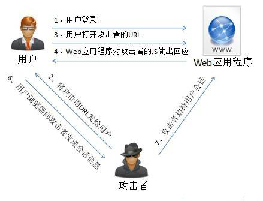

XSS (Cross Site Script)，跨站脚本攻击，因为缩写和 CSS (Cascading Style Sheets) 重叠，所以只能叫 XSS。
XSS 的原理是恶意攻击者往 Web 页面里插入恶意可执行网页脚本代码，当用户浏览该页之时，嵌入其中 Web 里面的脚本代码会被执行，从而可以达到攻击者盗取用户信息或其他侵犯用户安全隐私的目的。XSS 的攻击方式千变万化，但还是可以大致细分为几种类型。
非持久型 XSS 漏洞，也叫反射型 XSS 漏洞，一般是通过给别人发送带有恶意脚本代码参数的 URL，当 URL 地址被打开时，特有的恶意代码参数被 HTML 解析、执行。

举一个例子，比如你的 Web 页面中包含有以下代码：
<select>
<script>
document.write(''
+ '<option value=1>'
+ location.href.substring(location.href.indexOf('default=') + 8)
+ '</option>'
);
document.write('<option value=2>English</option>');
</script>
</select>攻击者可以直接通过 URL (类似：[https://xx.com/xx?default=<script>alert(document.cookie)</script>](https://xx.com/xx?default=%3Cscript%3Ealert(document.cookie)%3C/script%3E)) 注入可执行的脚本代码。
非持久型 XSS 漏洞攻击特征：
即时性，不经过服务器存储，直接通过 HTTP 的 GET 和 POST 请求就能完成一次攻击，拿到用户隐私数据。
攻击者需要诱骗点击；
反馈率低，所以较难发现和响应修复；
盗取用户敏感保密信息。
持久型 XSS 漏洞，也被称为存储型 XSS 漏洞，一般存在于 Form 表单提交等交互功能，如发帖留言，提交文本信息等，黑客利用的 XSS 漏洞，将内容经正常功能提交进入数据库持久保存，当前端页面获得后端从数据库中读出的注入代码时，恰好将其渲染执行。
主要注入页面方式和非持久型 XSS 漏洞类似，只不过持久型的不是来源于 URL，refferer，forms 等，而是来源于后端从数据库中读出来的数据。持久型 XSS 攻击不需要诱骗点击，黑客只需要在提交表单的地方完成注入即可，但是这种 XSS 攻击的成本相对还是很高。
持久型 XSS 特点：
持久性，植入在数据库中
危害面广，甚至可以让用户机器变成 DDoS 攻击的肉鸡。
盗取用户敏感私密信息
其实现在很多的浏览器以及各种开源的库都专门针对了 XSS 进行转义处理，尽量默认抵御绝大多数 XSS 攻击，但是还是有很多方式可以绕过转义规则，让人防不胜防。比如「基于字符集的 XSS 攻击」就是绕过这些转义处理的一种攻击方式，比如有些 Web 页面字符集不固定，用户输入非期望字符集的字符，有时会绕过转义过滤规则。
以基于 utf-7 的 XSS 为例
utf-7 是可以将所有的 unicode 通过 7bit 来表示的一种字符集 (但现在已经从 Unicode 规格中移除)。
这个字符集为了通过 7bit 来表示所有的文字, 除去数字和一部分的符号,其它的部分将都以 base64 编码为基础的方式呈现。
<script>alert("xss")</script>
可以被解释为：
+ADw-script+AD4-alert(+ACI-xss+ACI-)+ADw-/script+AD4-可以形成「基于字符集的 XSS 攻击」的原因是由于浏览器在 meta 没有指定 charset 的时候有自动识别编码的机制，所以这类攻击通常就是发生在没有指定或者没来得及指定 meta 标签的 charset 的情况下。
基于字符集的 XSS预防：
记住指定 <meta charset="utf-8">
XML 中不仅要指定字符集为 utf-8，而且标签要闭合基于 Flash 的跨站 XSS 也是属于反射型 XSS 的一种，虽然现在开发 ActionScript 的产品线几乎没有了，但还是提一句吧，AS 脚本可以接受用户输入并操作 cookie，攻击者可以配合其他 XSS（持久型或者非持久型）方法将恶意 swf 文件嵌入页面中。主要是因为 AS 有时候需要和 JS 传参交互，攻击者会通过恶意的 XSS 注入篡改参数，窃取并操作cookie。
避免方法：
严格管理 cookie 的读写权限
对 Flash 能接受用户输入的参数进行过滤 escape 转义处理有一些场景是后端需要对一个传进来的待跳转的 URL 参数进行一个 302 跳转，可能其中会带有一些用户的敏感（cookie）信息。如果服务器端做302 跳转，跳转的地址来自用户的输入，攻击者可以输入一个恶意的跳转地址来执行脚本。
预防措施：
对待跳转的 URL 参数做白名单或者某种规则过滤
后端注意对敏感信息的保护, 比如 cookie 使用来源验证。恶意脚本通过document.cookie读取浏览器的cookie信息，从而发起“Cookie劫持”攻击，如直接登录进用户的账户。
注入脚本，构造GET、POST请求，对某个连接进行攻击。
利用JavaScript在当前页面上“画出”一个伪造的登录框，当用户在登录框中输入用户名与密码后，其密码将被发送到黑客的服务器上。
通过访问某段具有window.location.href定位到其他页面
识别用户浏览器：通过XSS读取浏览器的UserAgent对象；根据各个浏览器之间存在的实现差异，不同的浏览器会各自实现一些独特的功能，从而写代码识别出不同的浏览器。
识别用户安装的软件：举例：IE中，可以通过判断ActiveX控件的某个classid是否存在，来推测用户是否安装了该软件。FireFox的插件列表存放在一个DOM对象中，通过查询DOM可以遍历出所有的插件。Chrome中，通过检测扩展的图标，来判断某个特定的扩展是否存在。
CSS History Hack：就是通过CSS，来发现一个用户曾经访问过的网站。其原理就是利用style的visited属性——如果用户曾经访问过某个链接，那么这个链接的颜色会变得与众不同。
获取用户的真实IP地址
1、对重要的cookie设置“httpOnly”, 防⽌客户端通过document.cookie读取cookie。服务端可以将不同cookie选择性设置httpOnly。
2、Web 页面渲染的所有内容或者渲染的数据都必须来自于服务端。
3、尽量不要从 URL，document.referrer，document.forms 等这种 DOM API 中获取数据直接渲染。
4、尽量不要使用 eval, new Function()，document.write()，document.writeln(),window.setInterval()，window.setTimeout()，innerHTML，document.creteElement() 等可执行字符串的方法。
5、后端在入库前应该选择不相信任何前端数据，将所有的字段统一进行转义处理。再严格一点就把输⼊的⼀些不合法的东西都过滤掉，从⽽保证安全性。如移除⽤户上传的DOM属性，如onerror，移除用户上传的Style节点，<iframe>、<script>、<base>、<form> 节点等。对于富文本要特别考虑这个。
6、后端在输出给前端数据统一进行转义处理。
7、前端在渲染页面 DOM 的时候应该选择不相信任何后端数据，任何字段都需要做escape转义处理。escape 转义的目的是将一些构成 HTML 标签的元素转义，比如 <，>，空格 等。
对于 PHP语言可以使用 ezyang/htmlpurifier 库对用户输入进行过滤、转义
1、安装 HTML Purifier
composer require ezyang/htmlpurifier2、新建中间件
php artisan make:middleware XSS3、添加中间件 app/Http/Kernel.php
protected $routeMiddleware = [
'xss' => \App\Http\Middleware\XSS::class,
];4、XSS 中间件规则的 DEMO
<?php
namespace App\Http\Middleware;
use Closure;
use Illuminate\Http\Request;
/**
* 防 xss 攻击中间件
*/
class XSS
{
public function handle(Request $request, Closure $next)
{
//过滤XSS方法,这里是去除输入的html标签
$userInput = $request->all();
$config = \HTMLPurifier_Config::createDefault();
# 过滤掉所有html标签
$config->set('HTML.Allowed', '');
$config->set('Cache.SerializerPath', storage_path('app/purify'));
// 只允许图片标签 img 及其链接和描述
// $config->set('HTML.Allowed', 'img[src|alt]');
$purifier = new \HTMLPurifier($config);
foreach ($userInput as &$value) {
if (is_string($value)) {
$value = $purifier->purify($value);
} elseif (is_array($value)) {
$value = $purifier->purifyArray($value);
}
}
$request->merge($userInput);
return $next($request);
}
}5、路由添加 XSS 中间件
# 发表动态
$router->middleware(['xss'])->post('/dynamic/doPublish', [DynamicController::class, 'doPublish']);[1] https://xx.com/xx?default=: https://xx.com/xx?default=%3Cscript%3Ealert(document.cookie[2] ezyang/htmlpurifier: https://github.com/ezyang/htmlpurifier